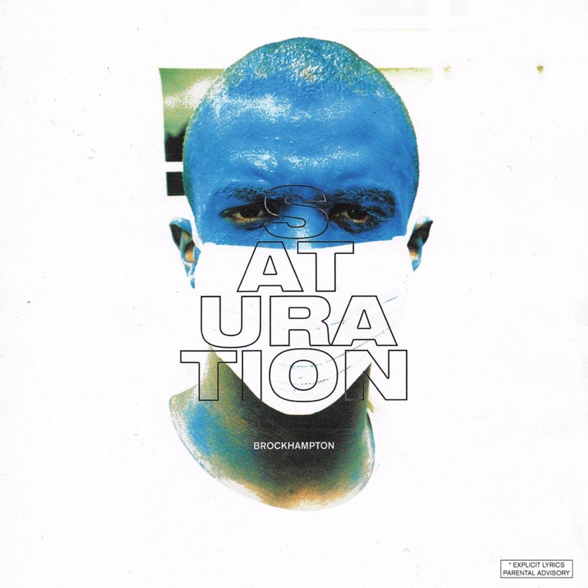
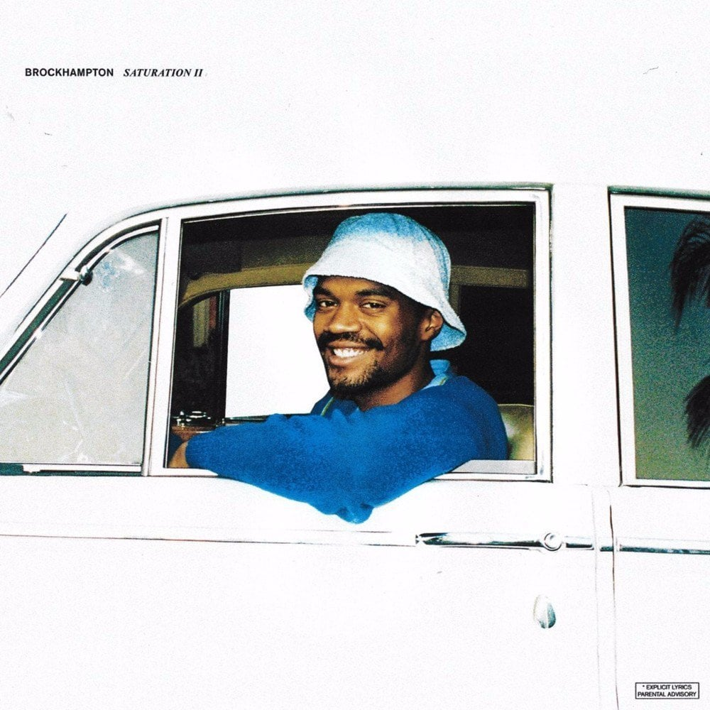
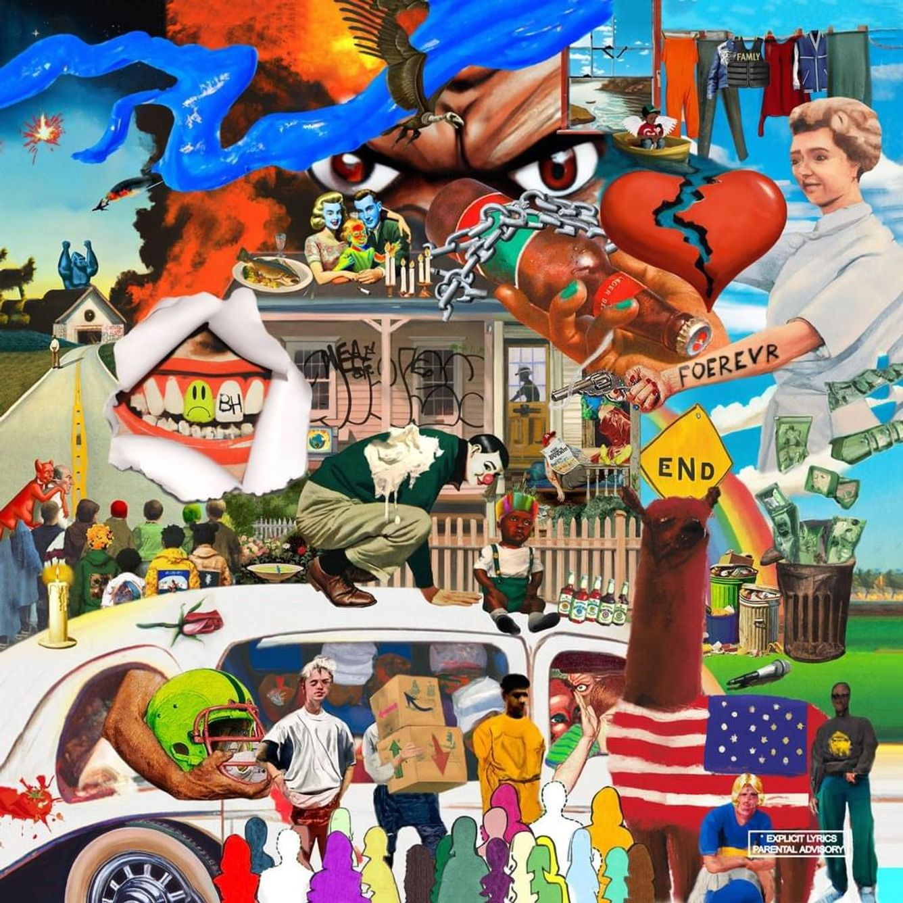
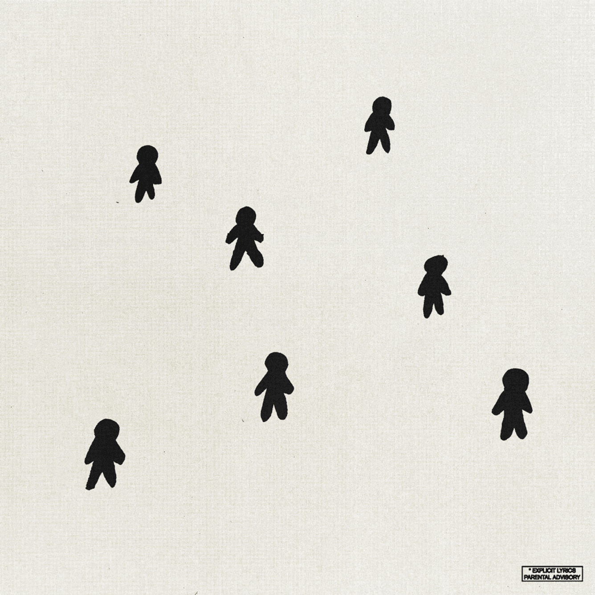

ALBUM EXPLORATION
Explore BROCKHAMPTON's albums all in one scroll.
ALL-AMERICAN TRASH (2016)
As the first album released, AAT is experimental and is sometimes considered to be a mixtape rather than an album. Typically the least favorite album of fans, AAT isn't as developed as other BH releases and the tracks are short in comparison to other works released. One track 'FLIP MO' is joked as being BH's best song by fans due to how bad the track is. However, a few memorable tracks are 'BEN CARSON' and 'MICHIGAN.'
SATURATION I, II, III (2017)
The SATURATION series was released in 2017, BROCKHAMPTON aiming to saturate the market with their music.

SATURATION
SATURATION
Using some of the sound they created in AAT, SATURATION I is a fan favorite, and includes some of the band's best tracks.
The album features a variety of fast songs with loud bass, but also includes a few slower tracks.
Almost all the songs are fan favorites but the most memorable are 'GOLD,' 'STAR,' and 'FACE.'

SATURATION II
SATURATION II
Continuing the SATURATION series, this album is another favorite of the fans. One in particular, 'FIGHT'
sticks out as members Ameer and Dom discuss their experiences of growing up black in America and how their skin color
affects mamy aspects of their lives. Additionally, 'JUNKY' is another track that discusses tough topics, such as homophobia, drug abuse, suicidal thoughts,
and sexism. By rapping about relevant social topics, BH made a mark in the rap industry with these tracks.

SATURATION III
As the final installment in the SATURATION series, SATURATION III features arguably BROCKHAMPTON's most popular track: 'BLEACH.'
With a total of over 200,000,000 listens on Spotify, the song allows members to rap about their internal struggles and wipe them away with bleach. Being their most popular song,
it's clear that with its meaningful lyrics, 'BLEACH' is a representation on what makes BROCKHAMPTON special.
iridescence (2018)
Often not favorited by fans, iridescence is the album that was released after Ameer Vann's departure from the group.
While the group went through the turmoil of losing an important member, the feedback of iridescence reflects the difficult time the band went through. Vann, accused of emotional
and sexual abuse and sexual misconduct with minors, was exposed on Twitter. While he did apologize for his actions, he eventually left the group.
Iridescence, while sometimes not being as liked as the SATURATION series, includes a few gems, one being 'DISTRICT.' The track discusses the role materialism plays in the group after their rise to fame
after releasing the SATURATION series and also discusses topics such as depression, loneliness, and paranoia.
GINGER (2019)
The release of GINGER features another one of the band's most famous tracks: 'SUGAR.' After getting famous on TikTok, the track exposed the group to a larger
audience. On Spotify, it's BH's most played song, reaching over 400,000,000 listens.
Besides 'SUGAR,' the album uses religion as a metaphor, as seen with titles 'NO HALO,' 'HEAVEN BELONGS TO YOU,' and 'IF YOU PRAY RIGHT.' Member Joba raps about his experience with faith
and the album represents the band's recovery after the departure of Ameer. One track, 'DEARLY DEPARTED' features the band's thoughts on Ameer and his departure.
ROADRUNNER: NEW LIGHT, NEW MACHINE (2019)
ROADRUNNER has many features of other artists, giving the tracks variety. Two notable tracks include 'THE LIGHT' and 'THE LIGHT PT. II' which showcases Joba reflecting on his father's suicide and how its affected him. Tackling these difficult topics, fans showed support to the member through online communities.
TF & TM (2022)

The Family
The Family
As one of the last BH albums, The Family is problematic as it only features leader Kevin Abstract and no other members. However, the album shares the falling out
that the band experienced and how Abstract wasn't able to keep the band together in the end. One notable track is 'Brockhampton' which is Abstract's farewell to the band.
The intro to the track features a clip of an Instagram live from 2019 where the band walked through the McDonald's drive through after performing a show. Serving as the finale to the album and the band,
the track is bittersweet as Abstract recounts the good memories and talents of the other members.

TM
TM
TM was a bonus final album released by the band featuring all of its members. At their final performance at the Fonda, Merlyn spoiled to the fans that TM stands for
"the mountain." 'NEW SHOES' received a music video and gave fans one last taste of the band being together. The final track 'GOODBYE' serves as all the members' last words and thoughts on being part of BROCKHAMPTON.
THE FALL OF BROCKHAMPTON
BROCKHAMPTON started to decline in 2018 after member Ameer Vann received allegations of emotional and sexual abuse, leading to his dismissal from the group. At the time, the band had continuously teased their album formally known as PUPPY, which ended up getting scrapped due to Vann leaving the group.
Also in 2018, the band signed with the record label RCA, and in The Family, Kevin Abstract shares how the album was made "to get out the deal" and how the boys "sign[ed] for too many motherf***in' deals." In their contract with RCA, BROCKHAMPTON was required to release six albums.
Like many boybands, it's common for them to breakup, but fans were surprised to hear BROCKHAMPTON was cancelling their entire US and part of their Europe tour, going on an "indefinite hiatus" with their last performances being London and Coachella 2022.